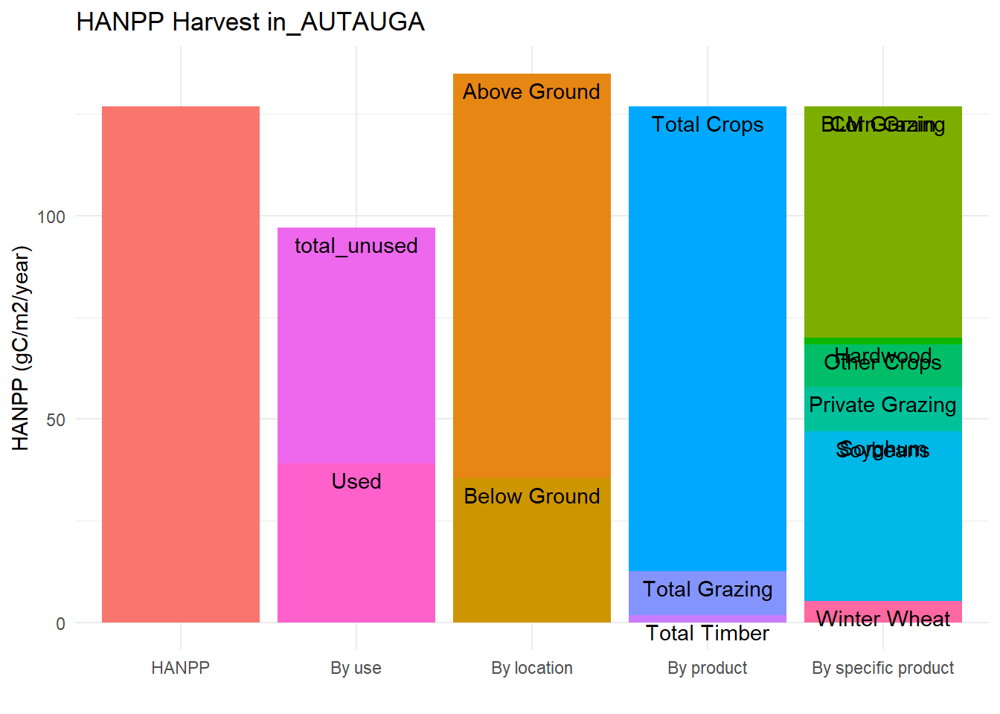

Chapter 4 HANPP categories (x), and HANPP variable (sections within the bars)
## # A tibble: 6 x 28
## county state state_county year corn_grain_1 corn_silage_1 winter_wheat_1
## <chr> <chr> <chr> <dbl> <dbl> <dbl> <dbl>
## 1 AUTAUGA ALABAMA ALABAMA_AUTAU~ 2012 1.28 NA NA
## 2 BALDWIN ALABAMA ALABAMA_BALDW~ 2012 1.82 NA NA
## 3 BARBOUR ALABAMA ALABAMA_BARBO~ 2012 1.98 NA NA
## 4 BIBB ALABAMA ALABAMA_BIBB 2012 NA NA NA
## 5 BLOUNT ALABAMA ALABAMA_BLOUNT 2012 1.42 NA NA
## 6 BULLOCK ALABAMA ALABAMA_BULLO~ 2012 1.88 NA NA
## # ... with 21 more variables: spring_wheat_durum_1 <lgl>,
## # spring_wheat_excluding_durum_1 <dbl>, soybeans_1 <dbl>,
## # hay_alfalfa_1 <dbl>, cotton_pima_1 <dbl>, cotton_upland_1 <dbl>,
## # sorghum_1 <dbl>, other_crops_1 <dbl>, total_crops_1 <dbl>,
## # hardwood_1 <dbl>, softwood_1 <dbl>, total_timber_1 <dbl>,
## # blm_grazing_1 <dbl>, usfs_grazing_1 <dbl>, private_grazing_land_1 <dbl>,
## # total_grazing_1 <dbl>, total_hanpp <dbl>, total_used <dbl>,
## # total_unused <dbl>, total_below_ground <dbl>, total_above_ground <dbl># This is what we want the data frame to look like after we pivot
data.frame(county = NA,
state = NA,
state_county = NA,
year = NA,
variable = NA,
value = NA)## county state state_county year variable value
## 1 NA NA NA NA NA NA# Pivot longer
hanpp_long <- hanpp %>%
pivot_longer(cols = corn_grain_1:total_above_ground,
names_to = "variable",
values_to = "gc_m2_yr")
# Add column for HANPP category
hanpp_long <- hanpp_long %>%
mutate(variable = case_when(
variable == "total_crops_1" ~ "total_crops",
variable == "total_timber_1" ~ "total_timber",
variable == "total_grazing_1" ~ "total_grazing",
TRUE ~ variable
)) %>%
mutate(category = case_when(
grepl(pattern = "_1", x = variable) ~ "By specific product",
variable %in% c("total_crops", "total_timber", "total_grazing") ~ "By product",
variable == "total_hanpp" ~ "HANPP",
grepl(pattern = "above_ground", variable) ~ "By location",
grepl(pattern = "below_ground", variable) ~ "By location",
grepl(pattern = "used", variable) ~ "By use",
grepl(pattern = "unused", variable) ~ "By use"
))
#Fix names of specific crops
hanpp_long <- hanpp_long %>%
mutate(variable = case_when(
variable == "corn_grain_1" ~ "Corn Grain",
variable == "corn_silage_1" ~ "Corn Silage",
variable == "winter_wheat_1" ~ "Winter Wheat",
variable == "spring_wheat_durum_1" ~ "Spring Wheat Durum",
variable == "spring_wheat_excluding_durum_1" ~ "Spring Wheat Excluding Durum",
variable == "soybeans_1" ~ "Soybeans",
variable == "hay_alfalfa_1" ~ "Hay Alfalfa",
variable == "cotton_pima_1" ~ "Cotton Pima",
variable == "total_crops_1" ~ "Total Crops",
variable == "hardwood_1" ~ "Hardwood",
variable == "softwood_11" ~ "Softwood",
variable == "private_grazing_land_1" ~ "Private Grazing",
variable == "total_timber_1" ~ "Total Timber",
variable == "blm_grazing_1" ~ "BLM Grazing",
variable == "usfs_grazing_1" ~ "USFS Grazing",
variable == "total_grazing_1" ~ "Total Grazing",
variable == "softwood_1" ~ "Softwood",
variable == "sorghum_1" ~ "Sorghum",
variable == "other_crops_1" ~ "Other Crops",
variable == "total_hanpp" ~ " ",
variable == "total_used" ~ "Used",
variable == "total_hanpp" ~ "Unused",
variable == "total_below_ground" ~ "Below Ground",
variable == "total_above_ground" ~ "Above Ground",
variable == "total_crops" ~ "Total Crops",
variable == "total_grazing" ~ "Total Grazing",
variable == "total_timber" ~ "Total Timber",
TRUE ~ variable
))
names(hanpp)## [1] "county" "state"
## [3] "state_county" "year"
## [5] "corn_grain_1" "corn_silage_1"
## [7] "winter_wheat_1" "spring_wheat_durum_1"
## [9] "spring_wheat_excluding_durum_1" "soybeans_1"
## [11] "hay_alfalfa_1" "cotton_pima_1"
## [13] "cotton_upland_1" "sorghum_1"
## [15] "other_crops_1" "total_crops_1"
## [17] "hardwood_1" "softwood_1"
## [19] "total_timber_1" "blm_grazing_1"
## [21] "usfs_grazing_1" "private_grazing_land_1"
## [23] "total_grazing_1" "total_hanpp"
## [25] "total_used" "total_unused"
## [27] "total_below_ground" "total_above_ground"# Plot
hanpp_long <- hanpp_long %>%
mutate(category = factor(category,
levels = c("HANPP",
"By use",
"By location",
"By product",
"By specific product")))
ggplot(hanpp_long[which(hanpp_long$county == "RAY"), ],
aes(x = category, y = gc_m2_yr, fill = variable)) +
geom_bar(position = "stack", stat = "identity") +
geom_text(aes(label = variable), position = "stack", vjust = 1.5) +
theme_minimal() +
theme(legend.position = "none") +
labs(x = " ", y = "HANPP (gC/m2/year)") +
ggtitle(paste0("HANPP Harvest in_", hanpp_long$county))## Warning: Removed 8 rows containing missing values (position_stack).
## Warning: Removed 8 rows containing missing values (position_stack).